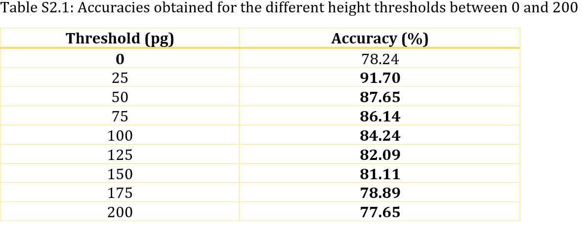
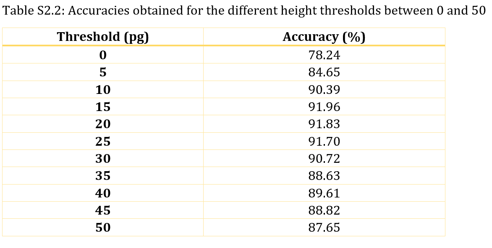

Study 2: Threshold Height study
Important properties of alleles in a DNA sample include the allele number, allele height, and allele size. The allele number expresses the numerical representation of that allele. The allele height pertains to the height of the peak representing the allele on an electropherogram, while the allele size represents the area occupied by that peak. To account for drop-ins (an extra allele added to a sample during analysis ), this study was conducted to determine a height threshold at which an allele can be regarded as a drop-in, and thus excluded from the sample. Using NoC analysis, it was found that when certain alleles were excluded from the samples, higher accuracies can be obtained. Generally, it was found that the exclusion of alleles with heights less than 10 can lead to higher accuracies. On the other hand, the exclusion of alleles with heights greater than 30 can lead to lower accuracies.
Data Analysis
The PROVEDit database was used in this study. Starting at a threshold of 0 and ending at 200, the height threshold was increased at an interval of 25. At each interval, alleles whose heights were below the threshold were ignored. The NoC of the samples is then obtained (Table S2.1). In Table S2.1, the highest accuracy obtained was around threshold 25, meaning alleles whose heights are less than 25 RFU can be ignored during analysis. Further analysis of thresholds between 0 and 50 (at 5 intervals), is shown in Table S2.2. From this, it can be concluded that a threshold between 15 and 30 is ideal.

